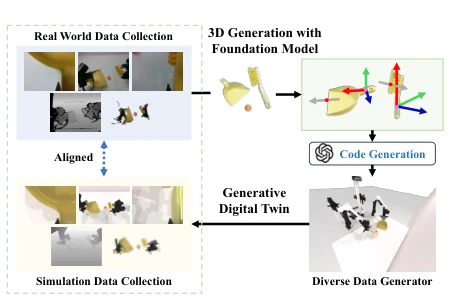
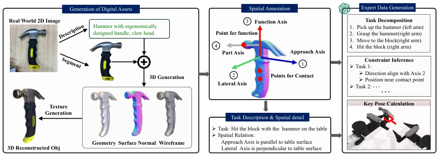
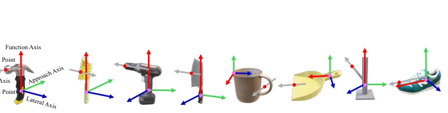
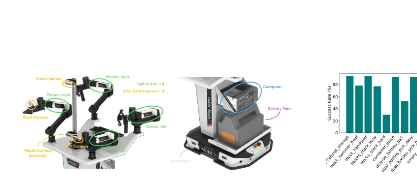
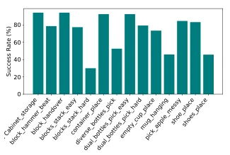
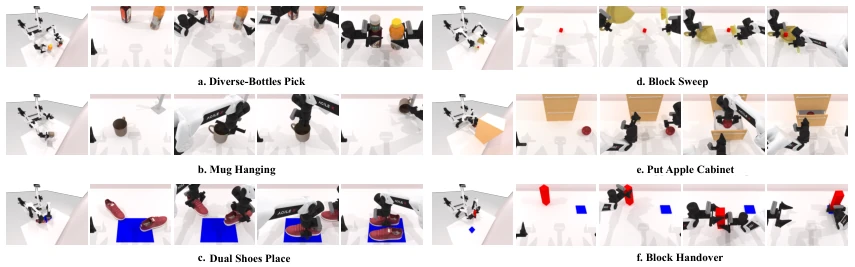
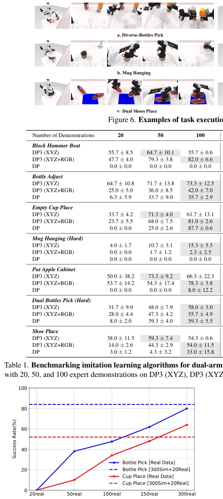
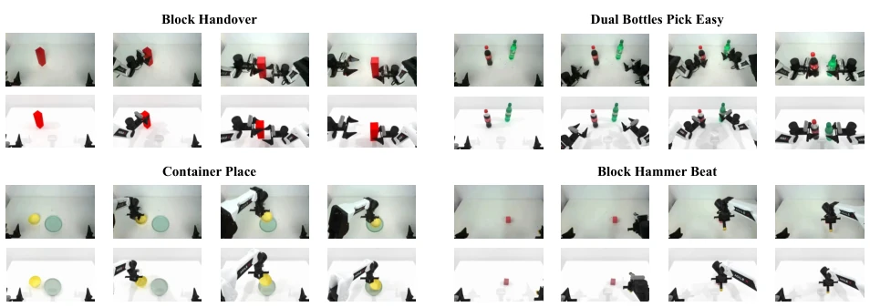

这篇论文给双臂机器人搞了个“生成式数字孪生”大饼，听着挺高大上，其实就是用 3D 生成模型 +LLM 把 2D 图变 3D 再写代码跑仿真。好处是确实省了真人遥操作的钱，数据多样性上去了；坏处是“数字孪生”有点名不副实，本质还是仿真数据增强，物理引擎还是 ManiSkill3。双臂协同这块，虽然标榜 benchmark，但实验结果也老实承认了，双臂任务成功率还是远低于单臂，说明算法瓶颈没解决，光靠数据生成不够。不过对于解决数据稀缺问题，这思路还算务实，至少比纯靠 VR 遥操作便宜，适合快速验证策略。
This paper proposes a "Generative Digital Twin" grand promise for dual-arm robots, sounding quite impressive, but it essentially uses 3D generative models + LLM to convert 2D images to 3D and then write code to run simulations. The benefit is indeed saving money on human teleoperation, and data diversity has increased; the downside is that "Digital Twin" is somewhat misnamed, essentially still simulation data augmentation, with the physics engine still being ManiSkill3. Regarding dual-arm collaboration, although it claims a benchmark, the experimental results honestly admit that dual-arm task success rates are still far lower than single-arm, indicating the algorithmic bottleneck is not solved, and data generation alone is not enough. However, for solving the data scarcity problem, this approach is quite pragmatic, at least cheaper than relying purely on VR teleoperation, suitable for rapid strategy verification.
Dual-arm collaboration is key to advanced autonomous systems, but data scarcity is a significant drawback. Traditional human teleoperation [4, 12, 16] has high costs and long durations, making it difficult to cover diverse scenarios. Existing simulation trajectory generators [15] require specific task design and have poor generalization. Existing benchmarks mostly focus on single-arm or separated dual-arm, Bigym [13] is limited by fixed environments or VR teleoperation, lacking scalability. There is an urgent need for a scalable, standardized, and reality-aligned dual-arm collaboration benchmark to solve the disconnect between data and evaluation, promoting the development of complex manipulation capabilities. Currently, there is a lack of frameworks that can automatically generate diverse expert demonstration data, limiting the generalization ability of dual-arm policies.

Figure 1. RoboTwin Benchmark. A framework leveraging gen- erative foundational models to generate realistic and interactive training scenarios and diverse expert demonstrations for bench- marking dual-arm robotic manipulation.
方法Method
整体流程分为数字资产生成、空间标注、专家数据生成三阶段。首先，利用 3D 生成基础模型从单张 2D RGB 图像生成多样化的 3D 模型，包含几何、纹理和物理参数，确保仿真与真实视觉一致。其次，构建空间标注框架，半自动提取工具的功能点、接触点及功能轴、接近轴、侧向轴，并通过特征点匹配技术迁移标注，避免重复工作，为 LLM 提供几何先验。最后，基于 LLM 的专家数据生成框架，将任务分解为子任务，结合空间约束推理生成可执行代码（调用 MPlib 库），计算关键姿态并规划无碰撞轨迹。系统包含自校正机制，将执行错误反馈给 LLM 优化代码。该框架实现了从 2D 图像到仿真/真实数据的自动化流水线，支持双臂协同的复杂操作，显著降低了对人工示范的依赖。
The overall process is divided into three stages: digital asset generation, spatial annotation, and expert data generation. First, utilize 3D generative foundation models to generate diverse 3D models from a single 2D RGB image, including geometry, texture, and physical parameters, ensuring simulation and real visual consistency. Second, build a spatial annotation framework, semi-automatically extract tool functional points, contact points, and functional axes, approach axes, lateral axes, and migrate annotations through feature point matching technology to avoid repetitive work, providing geometric priors for LLM. Finally, based on an LLM-based expert data generation framework, decompose tasks into sub-tasks, combine spatial constraint reasoning to generate executable code (calling MPlib library), calculate key poses and plan collision-free trajectories. The system includes a self-correction mechanism, feeding execution errors back to LLM to optimize code. This framework achieves an automated pipeline from 2D images to simulation/real data, supporting complex operations of dual-arm collaboration, significantly reducing dependence on human demonstration.

Figure 2. Real-to-simulation transfer and expert data generation. We first leverage a 3D generative foundation model to create diverse 3D assets from 2D images, complete with geometry, normals, and textures. This process is augmented by vision-language models to generate variations of object descriptions, enabling the creation of visually diverse yet functionally consistent 3D models. We then implement a spatial annotation framework that marks key functional and contact points, along with functional, approach, and lateral axes on these 3D assets. Finally, we employ LLMs to generate expert demonstrations by decomposing tasks into subtasks, inferring spatial constraints, and generating collision-free robot behavior executable code that satisfies kinematic requirements.

Figure 3. Examples of spatial annotations. Function and contact points with principal axes for functional parts and approach directions are extracted semi-automatically within RoboTwin for spatial- and geometry-aware manipulation and code generation.

Figure 4. Illustration of our robot platform, with the capabilities for teleopera- tion and data acquisition.
Tested on the RoboTwin benchmark containing 15 tasks, using ManiSkill3 simulation and Cobot Magic real platform. Baselines include Diffusion Policy (DP) and 3D Diffusion Policy (DP3). The experiment compared the effect of training with only 20 real samples versus "300 simulation + 20 real" mixed training. Results show that mixed training improved success rate by 72% on single-arm task Hammer Beat, and by 42% on dual-arm task Cup Place. DP3 performs well under small sample sizes but has limited scalability, while DP is better under large sample sizes. It is found that dual-arm collaboration task success rates are still significantly lower than single-arm, indicating that current imitation learning algorithms still have bottlenecks in dual-arm coordination and need further improvement.

Figure 5. Success rate of the generated code for RoboTwin benchmark.

Figure 6. Examples of task execution in the RoboTwin benchmark.

Figure 7. Comparison on scaling up real and simulation data.

Figure 9. Visualization of real-world and RoboTwin-generated data. For each task, real-world collected data is shown in the top row, with RoboTwin-generated data displayed in the bottom row.